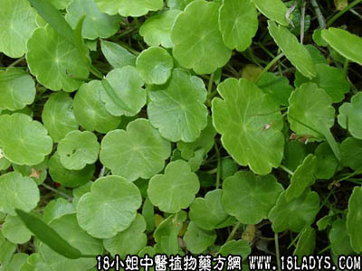

金钱草(中药材植物名:金钱草)(植物科目:蝶形花科)

别名：铜钱草。
植物名：金钱草。
生长环境：本品为直立、亚灌木状草本。丘陵或荒郊的旷地上常见之。
分布：广布于印度、越南和我国南部、广州近郊旷地上遍生之。
入药部分：全草。
采集期：夏、秋。
自采地点：山岗。
性味：性微凉、味甘香。
功能：平肝火、清气热、利水、通淋、祛黄、理肺热、化气、止咳。
主治、用量和用法：1、砂淋：干用2至4两，清水煎服；2、干热黄疸：用法同上。3、劳伤苦伤、肺燥咳血，配伍用；4、痰咳，配伍用；5、发热头痛：干用1至2两清水煎服。
验方1：（治劳伤肺燥咳血方）金钱草1两、红菱根5钱、东风桔5钱、旱莲草5钱、红丝线5钱、清水四碗，煎成一碗服。
（方解）金钱草、红菱根性凉，能消肺燥，旱莲草、红丝线入肝肾凉血，东风桔去骨蒸潮热之火，用此方治劳伤潮热，肺燥咳嗽，咯血，有效。
（方歌）劳伤咳血肺燥因，金钱草与红菱根，红丝东风旱莲草，清肺凉肾救肺金。
验方2：（治痰火核）金钱草1两、风栗壳1两、清水四碗，煎成一碗服。
（方解）金钱草气味甘香、功能平肝化气清热、可治痰火核，配风栗壳之苦泄以除肺火，治效更高。
（方歌）平肝化气金钱草，治痰火核真正好，再加风栗壳同煎，苦泄肺痰效更高。
参考资料：《中医研究院学术论文选集》中医研究院报告：金钱草的品种很多，经植物品种鉴定的已有五种：1、四川大金钱草是缨科植物，治肝胆结石获得满意，鲜草比干草疗效更高，老草比嫩草效果显著；2、四川小金钱草为旋花科植物，可用于痢疾、腹痛、疥疮；3、广州金钱草为豆科植物，用于肝胆、肾结石；4、江西金钱草为伞形科植物，天胡荽及其变种梅花藻叶天胡荽，用于肾脏炎、肾结石；5、红金钱草为唇科植物，即《本草纲目》的一种，可治膀胱结石。
《广东中医》（1960.5）内载：金钱草治疗胆石病手术后遗症一例，经摘除胆石后，反复发热，西医使用抗菌素等治疗无效后，改用金钱草治愈（此为广州金钱草，不同外省的）。
《广东省中医验方交流汇编》内载：灵效疳积散方：金钱草2两、黄花蜢叶1两（均晒干量）、火抗存性，研成细末，约分100包，每天服两次，每次饭后服，先将药散入猪肝内蒸熟服之，或用稀粥调服，轻症连服六天即愈，重者半月，服后检查大便，每有大量幼虫。